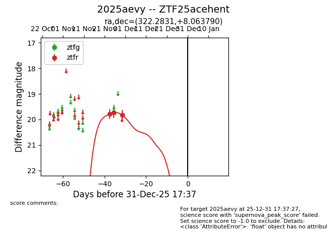
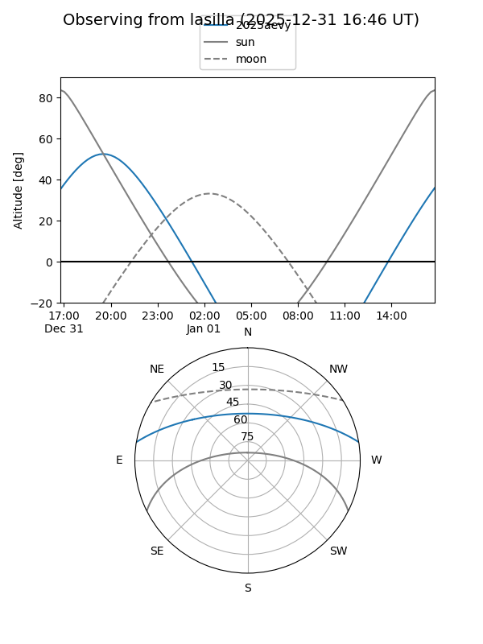
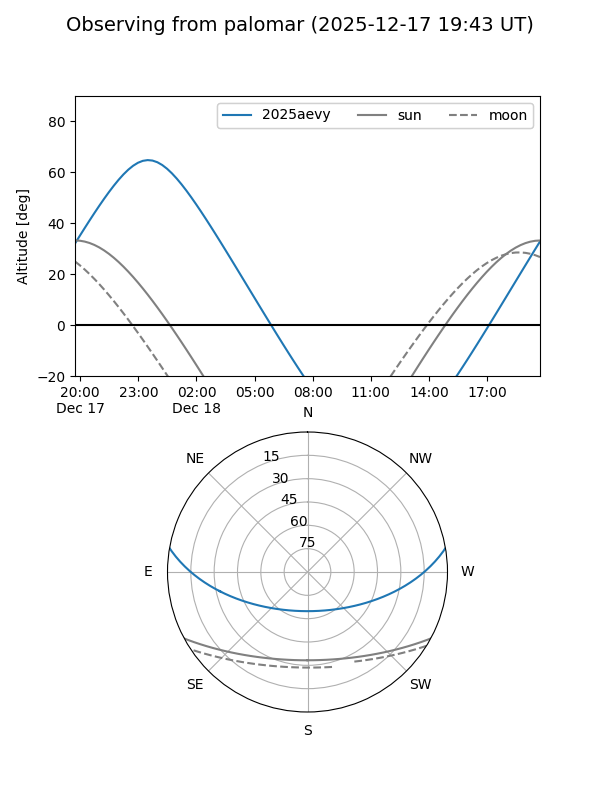
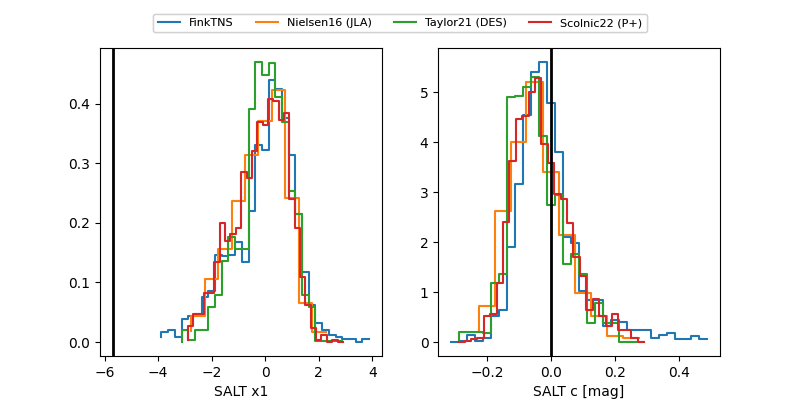

2025aevy
Target 2025aevy at 2025-12-18 11:17
Aliases and brokers:
FINK: fink-portal.org/ZTF25acehent
Lasair: lasair-ztf.lsst.ac.uk/objects/ZTF25acehent
ALeRCE: alerce.online/object/ZTF25acehent
TNS: wis-tns.org/object/2025aevy
YSE: ziggy.ucolick.org/yse/transient_detail/2025aevy
alt names
ZTF25acehent (ztf,fink_ztf)
2025aevy (tns,yse)
Coordinates:
equatorial (ra, dec) = 322.2831,+8.06379
equatorial (HMS+DMS) = 21:29:07.95,+08:03:49.64
galactic (l, b) = (61.2164,-29.71163)
Photometry
last ztfr=19.82
3 ztfr detections
Lightcurve

Visibility


Additional plots
